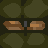

Dungeons are generated randomly and can contain any of the following features. Some are helpful, and some are harmful.
Entry Point: This is where your knight enters the dungeon. If you are injured, returning to your entry point will heal you – slowly. If you die, all items you were carrying will be dropped, and you will be returned to your entry point.
Exit Point: Most quests require you to escape from the dungeon via an exit point. Usually this will be the same as your entry point, but it could also be your enemy's, or some other, entry point. If you attempt to leave the dungeon without all necessary items, you will be informed of what you are missing.
Pits: There are Bottomless Pits. Do not enter.
Switches: Switches can have different effects. Some open doors or close pits. Some drop a portcullis behind you. Some trigger hidden crossbows inside skulls and walls.
Pentagrams: Pentagrams contain powerful, if rather dangerous magic. They can grant invisibility or invulnerability, teleport you next to your opponent, or even turn you into a zombie. There are also some pentagrams which are merely painted onto the ground, and have no special powers.
In addition, in "Destroy Book with Wand" quests there will be one "special" pentagram. The special pentagram is always located at the top of several staircases and is easily distinguished from a normal pentagram. To win the quest, you must place the book onto the special pentagram and strike it with the wand to destroy it.
Crystal balls: By looking into a crystal ball (simply walk towards it) you will be able to see the location of enemy knight(s), as flashing dots on your map.
 Doors: All doors begin the game closed. Some are also locked and will need a key, or lock picks, to open. Alternatively, you can just break them down with a suitable weapon!
Iron Doors: Unfortunately some doors are made of iron and cannot be knocked down. Most iron doors are locked and will require a key or lock picks to open. There are also some iron doors that can only be opened by pressing a switch elsewhere in the dungeon.
Portcullises: If closed, these will block your knight's path. They cannot be opened directly but they can sometimes be operated using switches or pressure pads.
Treasure Chests: These often contain useful items. They are sometimes locked, in which case they will require a key (or a well placed hammer blow) to open. If "Pretrapped Chests" is selected then they might also be trapped, so beware.
Furniture: There are various items of furniture, which don't do much, except maybe get in your way. The wooden barrels occasionally reveal hidden items when destroyed.